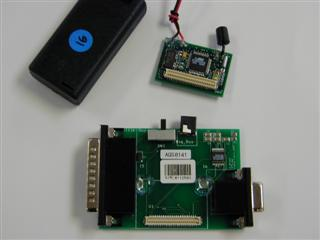
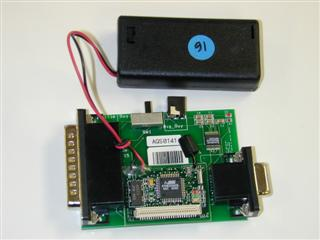
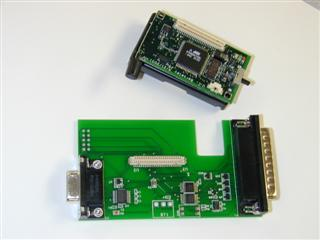
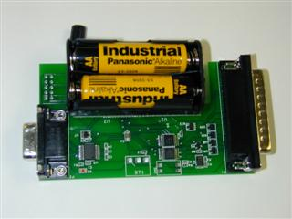

A TOS component implementation may contain a frame, a set of event handlers, a set of commands, a set of tasks, and local procedures. The commands must match the commands it claims to accept in the interface and similarly the events must match the events it claims to handle. The external namespace of the implementation is the commands it uses and events it signals. The implementation must include tos.h and NAME.h, where NAME is the name of the component.
A TOS component interface specifies the name of the component module, describes the set of commands the component accepts, the commands that it uses, the events that it handles, and the events it signals. The implementation is written in terms of the interface namespace. The syntax of the interface file is
TOS_MODULE name;
ACCEPTS{
command_signatures
};HANDLES{
event_signatures
};USES{
command_signatures
};SIGNALS{
event_signatures
};
Looking at the implementation itself, nest/apps/blink/blink.c consists of a frame, two commands and one event handler. The frame contains a single static variable, state. The two commands support a simple initialization protocol. By convention, we provide a MAIN component which starts up on hardware reset and invokes an INIT command followed by a START command. This allows the collection of components forming an application to come up cleanly.
A TOS command is called using TOS_CALL_COMMAND(cmd_name)(cmd_args_list)
The BLINK_INIT command turns off all the LEDs and initializes its frame. It then initializes subcomponents, passing an argument that indicates it should receive a clock event at 1 hz. The mapping from simple clock period to hardware specific values is provided by nest/tos/platform/NAME/include/hardware.h.
The BLINK_START command does nothing more in this case.After the initialization phase, this component is merely asleep until events occur.
A TOS event is declared as char TOS_EVENT(evnt_name)(evnt_arg_list). Lowest level events are connect directly to hardware interrupts by the system hardware abstraction layer. It does key work before reenabling interrupts. An event may signal events, call commands, or post tasks. It must complete in a short amount of time, bounded by the jitter requirements of the overall application.
A TOS event is signalled using TOS_SIGNAL_EVENT(evnt_name)(evnt_arg_list)
The BLINK_CLOCK_EVENT is intended to handle clock events on a periodic basis. It utilizes an internal state variable to keep track of the state of the red LED and toggles the LED on each clock tick.
Looking at the interface definition, nest/apps/blink/blink.comp, we see that it state the module name BLINK, declares the two commands it accepts and the one event it handles. These declarations match the signatures of the associated procedures in the implementation. It also declares that it uses a SUB_INIT command and a family of LED commands. It signals no events.
The TinyOS component approach separates creation of the components from their composition. It makes it very easy to swap components in and out and interpose components. It also limits the interactions between components to very narrow channels.
A TOS description file specifies the set of component modules used in the application and the wiring of commands and events across component interfaces. The component module name should match the root of the interface and the implementation file, case sensitive, as well as the module name in the .comp file. The wiring must be a subset of the interface elements associated with the components. There is a search path associated with resolution of module, typically consisting of "., tos/system, tos/platform, tos/shared". The syntax is as follows.
include modules{
module list
};connection list
To build this application, cd into the nest/apps/blink and type make. (On windows, you should do this within a CygWin command window. The gcc tools may behave strangely in a DOS command window.) By default, it will make an executible for each platform. To build for only the mica platform, type make mica. All objects, generated includes, and executibles are place in the bin directory for the specific platform, eg, binmica/. You should, of course, observe errors and warnings that arise in building your application. This example should not have any. At the very end, the Make shows you a piece of the load map that tells you whether your application fits.
To download your program into the Mica wireless sensor node, place the Mica board (or board and sensor stack) into the bay on the programming board, as shown below. You can either supply a 3 volt supply to the connector on the programming board or power the node directly. The red LED labeled D2 on the programming board will be on when power is supplied. Plug the 32-pin connector into the parallel port of a laptop configured with the TOS tools, or connect use a standard mail-female DB32 parallel port cable. Make sure that the switch on the side of the programming board is on BIG_GUY.
|  |  |
| Rene mote next to the programming board | Rene mote connected to the programming board |
|  |  |
| Mica mote next to the programming board | Mica mote connected to the programming board |
Type make install mica.
If you get:
uisp -dprog=dapa -dno-poll --erasecheck first whether the power is on. If you are using an IBM ThinkPad, it may be necessary to tell the tools to use lpt3. You can do this by adding a line
Probably the AVR MCU is not in the RESET state.
Check it out and run me again.
make: *** [install] Error 2
It should look something like the following:
$ make install micaThe red LED should blink on and off and 0.5 Hz.
avr-objcopy --output-target=srec binr
uisp -dprog=dapa -dno-poll -dlpt=3 --
Atmel AVR AT90S8535 is found.
Erasing device ...
Reinitializing device
Atmel AVR AT90S8535 is found.
sleep 1
uisp -dprog=dapa -dlpt=3 --upload if=
Atmel AVR AT90S8535 is found.
Uploading: flash
sleep 1
uisp -dprog=dapa -dlpt=3 -dno-poll --
Atmel AVR AT90S8535 is found.
Verifying: flash
make: Nothing to be done for `mica'.
Exercise: Modify blink.c to display the low three bits of a counter on the LEDs.
To peek at the answer, you can look in apps/count.
An even more useful example appears in apps/cnt_to_leds.
It abstracts the display capability into a component called INT_TO_LEDS.
By just changing the desc file, the output device can be switched to the
network. That is done in apps/cnt_to_rfm.
Note: make clean will clean up all generated files. If your directory
seems cluttered , it is often a good idea to run make clean.